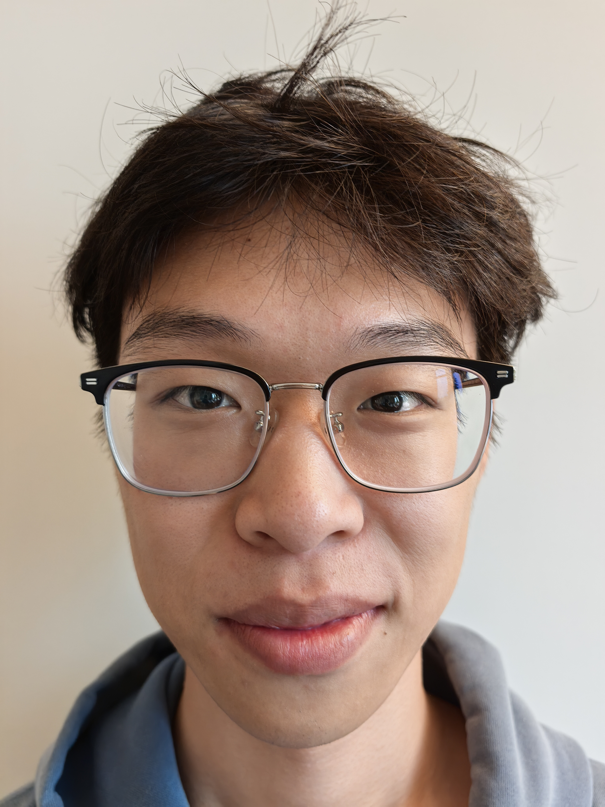

Project 0
Becoming Friends with Your Camera
A comparison of how camera distance and field of view change the appearance of a portrait.


By comparing the two photographs, we can clearly see that the nose occupies a much larger proportion of the face in the close-up image, whereas the facial features in the distant image are closer to their natural proportions.
We can imagine the camera's field of view as a triangular region. When the face is very close to the camera, the distance by which the nose protrudes is large relative to the overall camera-to-face distance. Because image magnification is inversely proportional to distance, the nose is magnified more than the cheeks and ears, making the difference especially noticeable. After the camera moves farther away, the same physical depth difference becomes very small compared with the total shooting distance. The facial features are therefore magnified by more similar amounts, so the face appears flatter and closer to its natural proportions.、